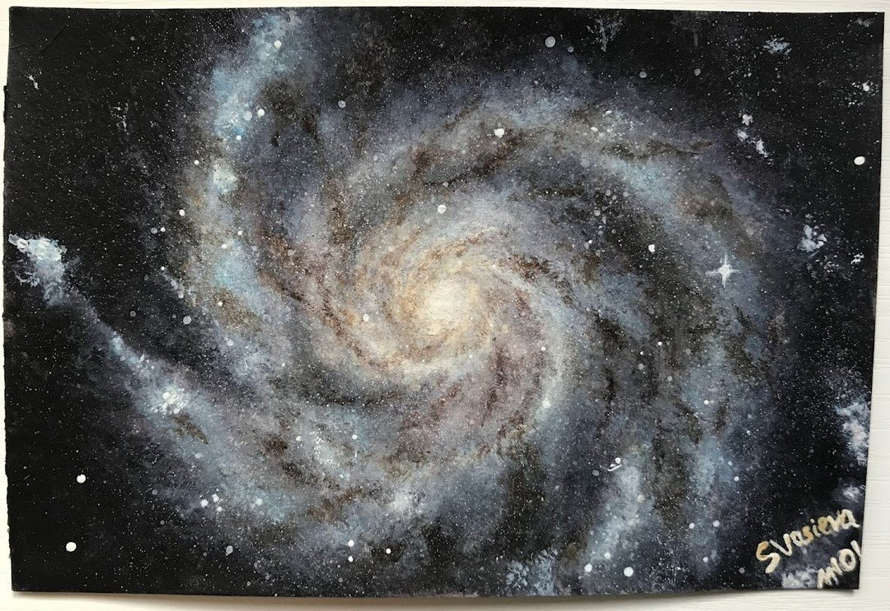

The Pinwheel Galaxy (M101)
The Pinwheel Galaxy (M101), a spiral galaxy in the constellation Ursa Major. It is a rather large galaxy, containing around 1 trillion stars.

The Pinwheel Galaxy (M101), a spiral galaxy in the constellation Ursa Major. It is a rather large galaxy, containing around 1 trillion stars.